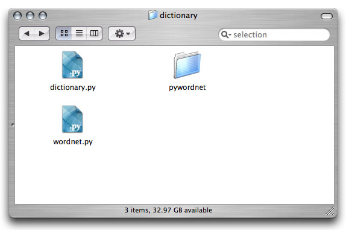
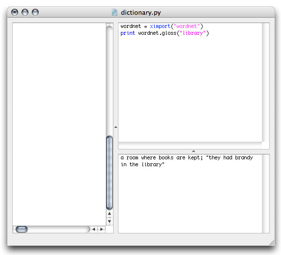

Libraries
NodeBox can be extended with a wealth of functionality (for example, Google queries, or image manipulation) by importing the right external libraries. All of these tools are kept apart from NodeBox for the simple reason that it would make NodeBox to unwieldy and complex if they would all be included.
Libraries from the NodeBox site
The NodeBox site has a lot of interesting libraries developed in and for NodeBox, for example WordNet functionality, or Core Image, which offers PhotoShop-like commands. A list of all libraries is here.
To use one of these libraries, you first need to download it to your computer. Then, you need to put the files somewhere where your NodeBox script can find them: in the same folder as your NodeBox script or in the Application Support folder (~/Library/Application Support/NodeBox/).
Then, import the library into your script with the ximport() command.
Notice how the wordnet.py library and the pywordnet folder (both came from the WordNet download) are in the same folder as the dictionary.py script (which we just created):
 
Python libraries
The scripts you write in NodeBox is in fact Python code. Since Python is installed on your Mac by default, you can access and import all of Python's libraries in your NodeBox projects.
Take a look at the list of Python libraries here.
You can import a library command into your script with the following statement:
variable = ximport("library")
For example, if you look at the random library on the above list of Python libraries, you see the random library has a shuffle() command to randomly reorder a list. To use this command in a NodeBox project:
list = [1, 2, 3, 4, 5] rnd = ximport("random") rnd.shuffle(list) print list >>> [3, 4, 1, 5, 2]
You don't need to install any files or anything, NodeBox knows where the Python libraries are.
For techies: why the ximport() command?
We prefer ximport() over the import statement, because it takes away a step of having to explain why all commands have brackets, but not import. Furthermore, ximport() passes the drawing context to a referenced library so that library can draw stuff to the screen.
But for standard Python libraries, you can still use import and from a import b if you like.